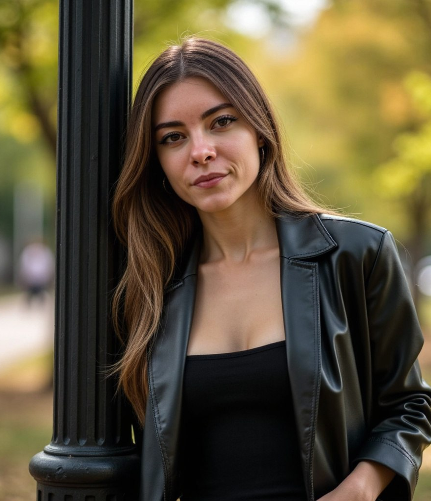

Influence Marketing Manager
Смотреть все проектыСпециалист по работе с популярными стримерами и блогерами, обладаю глубокими знаниями рынка digital-маркетинга и рекламы. Уже более двух лет активно занимаюсь продвижением брендов в сферах iGaming и организации ярких мероприятий.
Мир, где каждый бренд находит свою уникальную историю.
Превращать сотрудничество с инфлюенсерами в эффективный инструмент маркетинга.
